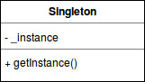

But : écrire une classe dont on ne peut instancier qu'un seul objet, et permettre d'y accéder globalement.
Exemples : un pilote d'imprimante, un registration manager, un DB connection manager.
Solution courante
- Déclarer tous les constructeurs de la classe private (empêche la création d'instance).- Fournir une méthode static renvoyant une référence vers l'instance (souvent appelée par convention
getInstance()).
L'instance est en général stockée dans une variable privée.

class RegistrationManager {
private static RegistrationManager _instance = new RegistrationManager();
private RegistrationManager() {} // interdit l'instantiation
public static RegistrationManager getInstance() {
return _instance;
}
public void registerUser (...) { ... }
}
Lazy loading
Cette version a un premier défaut : la classe est instanciée même si elle n'est pas utilisée dans le code ; pour économiser les ressources, on préfère utiliser le lazy loading : n'instancier un objet que lorsque l'application l'utilise vraiment.
class RegistrationManager {
private static RegistrationManager _instance = null;
private RegistrationManager() {} // interdit l'instantiation
public static RegistrationManager getInstance() {
if(_instance == null){
_instance = new RegistrationManager();
}
return _instance;
}
public void registerUser (...) { ... }
}
La classe ne sera instanciée que lorsque getInstance() est appelée.
Travailler uniquement en static
ATTENTION, ce paragraphe sort du pattern officiel.Défaut de l'implémentation précédente : l'utilisation est un peu lourde :
RegistrationManager m = RegistrationManager.getInstance(); m.registerUser(...);Pour éviter ça, on peut créer une méthode public static, qui va appeler une méthode d'instance private :
class RegistrationManager {
private static RegistrationManager _instance = null;
private RegistrationManager() {} // interdit l'instantiation
public static RegistrationManager getInstance() {
if(_instance == null){
_instance = new RegistrationManager();
}
return _instance;
}
// méthode static qui délègue à une méthode d'instance
public static void registerUser (...) {
return getInstance().doRegisterUser(...); // ICI on utilise getInstance() et pas _instance
}
// méthode d'instance, en cohérence avec le pattern Singleton
private void doRegisterUser (...) { ... }
}
L'utilisation est plus légère :
RegistrationManager.registerUser(...);Mais alors, pourquoi ne pas écrire une classe ne contenant que des membres static ?
(et éviter le boilerplate code).
class RegistrationManager {
public static void registerUser (...) { ... }
}
ATTENTION : cela n'est pas toujours possible, par exemple : on utilise une API permettant de travailler sur des données ; cette API définit une interface
interface DBConnectionInterface {
public void connect();
}
et fournit des méthodes du type faireUnTraitement(DBConnectionInterface connection, ...).
Pour utiliser cette API, on écrit une classe
public class MaConnexion implements DBConnectionInterface { ... }
Si la logique de notre code l'exige, on peut être amené à décider d'interdire que plus d'une instance de MaConnexion soit créee, et donc de faire un singleton. Mais l'API a besoin d'une instance, donc on ne peut pas travailler dans ce cas uniquement en static.
Multiton
Extension : le "multiton" (ne fait pas partie des patterns officiels) : cas où on a besoin de 2 (ou 3 ou plus) instances. Dans ce cas, on peut utiliser le même principe en utilisant une map (ou dictionnaire, ou tableau associatif).Critiques
-
La présence d'un singleton permet d'accéder à un service depuis n'importe où sans avoir à transmettre la référence vers ce service.
Mais pose le même problème qu'une variable globale, en introduisant des dépendances cachées dans le code :class MySingleton{ public void doSomething1(){ ... } public void doSomething2(){ ... } } class MyClass1{ MySingleton s = new MySingleton(); public void method1(){ s.doSomething1(); } } class MyClass2{ public static void method2(){ MySingleton s = new MySingleton(); s.doSomething2(); } } class ClientCode{ public static void method3(){ // MySingleton est dans un état 0 MyClass1.method1(); // MySingleton est dans un état 1 MyClass2.method2(); // MySingleton est dans un état 2 } }La classeClientCodepeut modifier l'état du singleton sans l'utiliser directement ; le seul moyen de repérer ces dépendances est d'inspecter le code, alors qu'on devrait pouvoir connaître ces dépendances uniquement en regardant l'API au niveau classe.
Problème accentué si plusieurs devs travaillent sur le même projet. - L'introduction d'un état global promeut un couplage fort entre classes, ce qui complique (parfois rend impossible) l'écriture de tests unitaires, qui ont besoin de classes faiblement couplées.
- Viole le Single Responsibility Principle : le singleton est à la fois responsable de sa logique métier et de la logique de sa création.
-
Le singleton n'est pas thread-safe :
On se place dans deux flots d'exécution parallèles qui vont utiliser la classeSingleton.
- Un premier thread exécute la fonctiongetInstance()constate que l’attribut_instanceest nul.
- Un deuxième thread s’exécute et lui aussi constate (viagetInstance()) que l’attribut_instanceest nul.
- Il va donc créer une instance et retourner celle-ci.
- Lorsque le premier thread va reprendre son exécution il va à son tour créer une nouvelle instance (étant donné qu’il a déjà effectué le test sur l’attribut) et retourner celle-ci.
On se retrouve alors avec deux instances pour une classe Singleton.